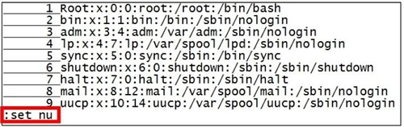

首页 > 编程笔记
Linux Vim显示行号方法详解
在使用 Vim 进行编辑的过程中，经常会遇到需要同时对连续几行进行操作的情况，这时如果每行都有行号提示，就会非常方便。
在命令模式下输入":set nu"即可显示每一行的行号，如图 1 所示。
如果想要取消行 号，则再次输入":set nonu"即可。
如果希望每次打开文件都默认显示行号，则可以编辑 Vim 的配置文件。每次使用 Vim 打开文件时，Vim 都会到当前登录用户的宿主目录（用户配置文件所在地）中读取 .vimrc 文件，此文件可以对 Vim 进行一些默认配置设定。
如果 .vimrc 文件存在，就先读取其中对 Vim 的设置；否则就采取默认配置。在默认情况下，用户宿主目录中是没有此文件的，需要在当前用户的宿主目录中手工建立，如"vim~/.vimrc"，"~"代表宿主目录，root 的宿主目录为 /root/，普通用户的宿主目录存放在 /home/ 目录下。可以直接使用 Vim 编辑生成此文件，并在此文件中添加一行"set nu"，保存并退出，如图 2 所示。

之后此用户登录，每次 Vim 打开文件时，都会默认显示行号。常见的可以写入 .vimrc 文件中的设置参数如表 3 所示。
设置参数实在太多了，这里只列举了常见的几个，可以使用":set all"命令査看所有的设置参数。这些设置参数都可以写入 .vimrc 配置文件中，让它们永久生效，也可在 Vim 中执行，让它们临时生效。
在命令模式下输入":set nu"即可显示每一行的行号，如图 1 所示。

图 1 显示行号
图 1 显示行号
如果想要取消行 号，则再次输入":set nonu"即可。
如果希望每次打开文件都默认显示行号，则可以编辑 Vim 的配置文件。每次使用 Vim 打开文件时，Vim 都会到当前登录用户的宿主目录（用户配置文件所在地）中读取 .vimrc 文件，此文件可以对 Vim 进行一些默认配置设定。
如果 .vimrc 文件存在，就先读取其中对 Vim 的设置；否则就采取默认配置。在默认情况下，用户宿主目录中是没有此文件的，需要在当前用户的宿主目录中手工建立，如"vim~/.vimrc"，"~"代表宿主目录，root 的宿主目录为 /root/，普通用户的宿主目录存放在 /home/ 目录下。可以直接使用 Vim 编辑生成此文件，并在此文件中添加一行"set nu"，保存并退出，如图 2 所示。
图 2 .vimrc配置文件
之后此用户登录，每次 Vim 打开文件时，都会默认显示行号。常见的可以写入 .vimrc 文件中的设置参数如表 3 所示。
| 设置参数 | 含 义 |
|---|---|
|
:set nu :set nonu |
设置与取消行号。 |
|
:syn on :syn off |
是否依据语法显示相关的颜色帮助。在Vim中修改相关的配置文件或Shell脚本文件 时（如前面示例的脚本/etc/init.d/sshd)，默认会显示相应的颜色，用来帮助排错。如果觉得颜色产生了干扰，则可以取消此设置 |
|
set hlsearch set nohlsearch |
设置是否将査找的字符串高亮显示。默认是hlsearch高亮显示 |
|
set nobackup set backup |
是否保存自动备份文件。默认是nobackup不自动备份。如果设定了:set backup，则会产生“文件名〜”作为备份文件 |
|
set ruler set noruler |
设置是否显示右下角的状态栏。默认是ruler显示 |
|
set showmode set noshowmode |
设置是否在左下角显示如“一INSERT--”之类的状态栏。默认是showmode显示 |
有关 .vimrc 配置文件，下节再进行详细讲解。
关注公众号「站长严长生」，在手机上阅读所有教程，随时随地都能学习。内含一款搜索神器，免费下载全网书籍和视频。

微信扫码关注公众号